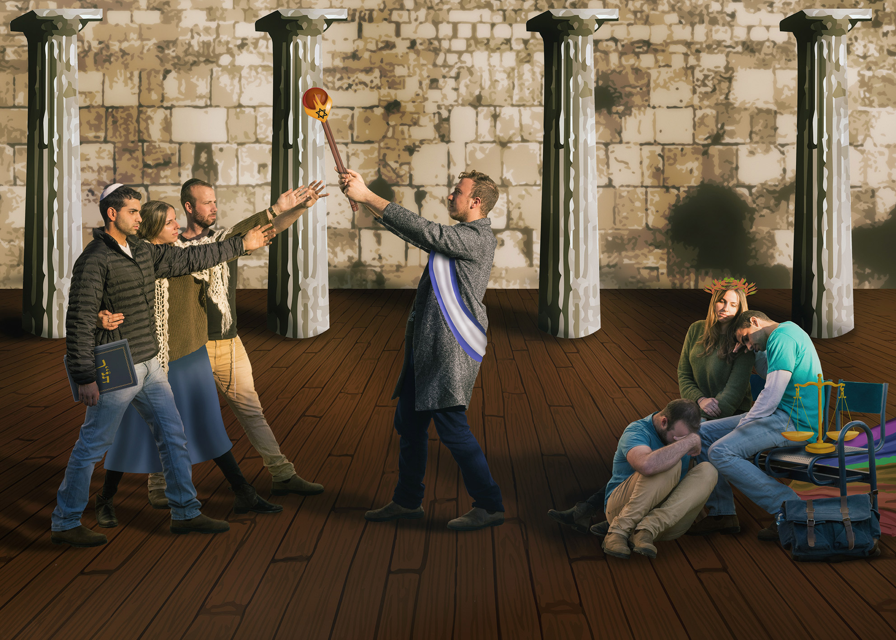

הומאז' לציור "שבועת ההוראטים"
סרטון הסבר
יצירה חדשה
יצירה מקורית

הסבר אודות העבודה:
היצירה המקורית מספרת על אב המשביע את בניו בחרב לפני צאתם למלחמה.
היצירה החדשה מספרת את סיפורה של מדינת ישראל.
ניתן לראות בהומאז' זה נקודת מבט אישית על היחס בין הדת והדמוקרטיה במדינה.
העבודה היא שילוב של צילום ועריכה בתוכנות Photoshop ו- Illustrator.
העבודה נעשתה במסגרת קורס מבוא לתקשורת חזותית ביחד עם טל קליין ויהודר שוץ.